-
Move Tool
The move tool moves an entire layer at a time. When you have selected this tool, click on a layer in the layer pane, and then click and drag on the image. The current layer will move all at once. You can even move it outside of the current image size. Don't worry, though, parts of an image that move outside the borders still exist - they are just hidden. They will only be cropped out if you flatten the image.
Category: Selection Tools -
Marquee Selection Tools

The following tools allow you to select regions in your image to alter, copy, move, and apply filters.
Category: Selection Tools -
Lasso tools

The lasso Selection Tools are similar to the marquee tools, except that the lasso tools give you ultimate freedom in terms of the shape of your selection. There are three different lasso tools:
A note about lasso tool options: When extracting part of an image from its background, the result will be choppy and rough around the edges unless you adjust the feather value in the options bar. This fades the edges you create and can smooth the region into its new background.
Category: Selection Tools -
Magic Wand Tool
The magic wand tool is similar to the magnetic polygon lasso tool except that rather than dragging to make a selection, you click in a region and a selection appears around similar colored pixels. You can control how similar pixels must be to be included in the selection by altering the tolerance value. This tool is useful for selecting monochromatic regions or pieces of high-contrast images.
Category: Selection Tools -
Quick Selection Tools
The quick Selection Tools is like the magic wand tool, it can be used to make selections based on pixel color values, except the quick Selection Tools is a little more sophisticated than the standard magic wand and hence, has been made the new default tool in this particular tool grouping.
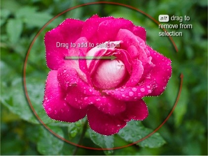 Category: Selection Tools -
Crop Tool
The crop tool can be used to crop an image to delete or hide the image data that falls outside the selected crop area.
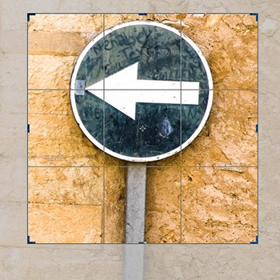 Category: Crop and Slice Tool -
Perspective Crop Tool
The perspective crop tool can be used to crop and correct the converging verticals or horizontal lines in a picture with a single crop action.
 Category: Crop and Slice Tool
Category: Crop and Slice Tool
-
Slice tool and
Slice select toolThe slice tools in Photoshop are particularly useful for Web designer’s as these allow them to divide an image up into rectangular sections, and the slices can then be used in Photoshop to specify how each individual slice will be optimized, what file format a slice area should be saved in and what compression settings should be used.
Category: Crop and Slice Tool -
Eyedropper tool 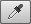Category: Measuring Tools
The eyedropper tool can be used to sample pixel color values from any open image window and make the sampled color the new foreground color.
-
Color sampler tool 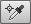
The color sampler tool works in the same way as the eyedropper tool, except it creates persistent pixel value readouts that are displayed in the Info panel and is capable of displaying up to four color sample point readouts in an image.
-
Ruler tool 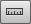Category: Measuring Tools
The ruler tool lets you measure distances and angles in an image. To draw a measuring line, make sure the Info panel and/or ruler tool options bar are visible and click and drag with the ruler tool in an image document window.
-
Note tool
You can use the note tool to add text notes to a file in Photoshop. Documents that are annotated in this way can be saved in the Photoshop (PSD), PDF or TIFF formats.
Category: Measuring Tools -
Count tool 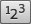
You can use the note tool to add text notes to a file in Photoshop. Documents that are annotated in this way can be saved in the Photoshop (PSD), PDF or TIFF formats.
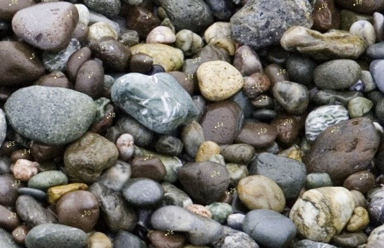 Category: Measuring Tools -
Spot healing brush
The spot healing brush is the default healing tool in Photoshop and can be used to clone areas from an image and blend the pixels from the sampled area seamlessly with the target area.
Category: Retouching Tools -
Healing brush
The healing brush enables you to clone areas from an image and blend the pixels from the sampled area seamlessly with the target area.
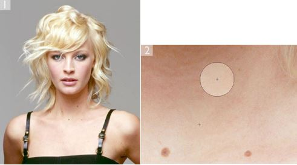 Category: Retouching Tools -
Patch tool 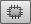
The patch tool uses the same complex algorithm as the healing brush to carry out its blend calculations, but the patch tool works with selection-defined areas instead of a brush.
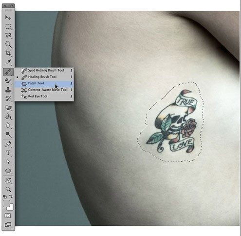 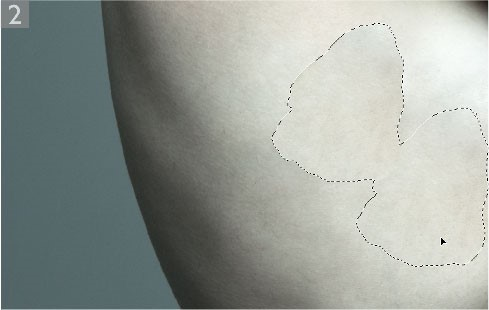 Category: Retouching Tools -
Content-aware move tool
A content-aware move tool has now been added to the healing group of tools. This tool works in a similar way to the patch tool in Destination mode, except it allows you to either extend a selected area or move it and fill the initial selected area.
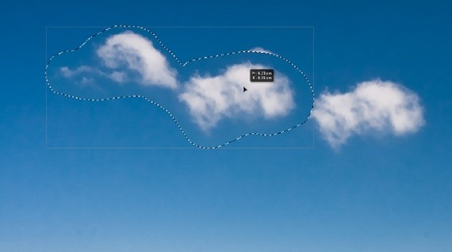 Category: Retouching Tools -
Red eye tool 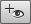
The red eye tool in Photoshop is an easy-to-use tool for removing red eye from photographs that have been taken with a direct flash source.
Category: Retouching Tools -
The clone stamp tool
The clone stamp tool is used to sample pixels from one part of the image to paint in another. This is an essential tool for retouching work such as spotting and general image repairing.
 Category: Retouching Tools
Category: Retouching Tools
-
Eraser tool
The eraser tool behaves in two ways depending on whether it is being used on the background or a layer. When used on the background layer, it removes pixels from an image, replacing them with the current background swatch color.
Category: Retouching Tools -
Background eraser tool

The background eraser tool erases the pixels based on the pixel colors sampled by the tool. The sampling options are accessed via the buttons in the Options bar next to the brush preset picker.
Category: Retouching Tools -
Magic eraser tool
The magic eraser tool works like the paint bucket tool in reverse. It can be used to erase neighboring or ‘similar’ pixels, based on the pixel color value where you click. It’s a very basic ‘one-shot’ tool and you should probably avoid using it if you can since the background eraser offers more adjustable control over how the pixels are erased.
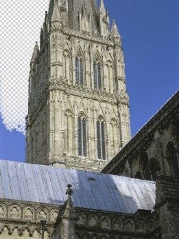 Category: Retouching Tools -
Blur tool 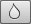
The blur tool can be used to apply localized blurring to a photo, soften portions of an image, or smooth over-sharp edges in an image or alpha channel mask.
Category: Retouching Tools -
Sharpen tool 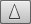
The sharpen tool allows you to apply localized sharpening effects to an image. Prior to Photoshop CS5 there were no circumstances where one would suggest using the sharpen tool since the outcome was pretty ugly looking sharpening artifacts.
Category: Retouching Tools -
Smudge tool 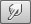
The smudge tool is an interesting painting tool to work with because it can be used to smear pixels the same way as one might mix paints together.
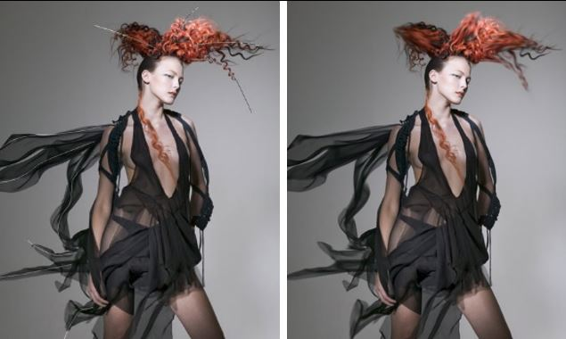 Category: Retouching Tools -
Dodge tool and Burn tool 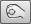
The dodge and burn tools in Photoshop offer you a limited amount of dodge and burn control, although these tools are not really suitable for working with large areas of an image. Having said that, the dodge and burn tools have been improved since Photoshop CS4 such that you can now use them to more effectively dodge and burn the pixels direct without producing the rather ugly effect.
Category: Retouching Tools -
Sponge tool 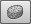
The dodge and burn tools in Photoshop offer you a limited amount of dodge and burn control, although these tools are not really suitable for working with large areas of an image. Having said that, the dodge and burn tools have been improved since Photoshop CS4 such that you can now use them to more effectively dodge and burn the pixels direct without producing the rather ugly effect.
Category: Retouching Tools -
Brush tool
The painting tools are all grouped below the selection and move tools. There are some common options available for these tools.
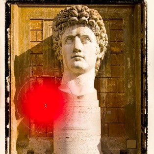 Category: Painting Tools -
Pencil tool
The pencil can be used to produce hard edged, anti-aliased, pencil-like drawing lines. The pencil tool is simply a fast response sketching tool, that does have some uses, such as creating and editing icons.
Category: Painting Tools -
Mixer brush tool

The mixer brush tool allows you to paint more realistically in Photoshop. With the mixer brush you can mix colors together as you paint, picking up color samples from the image you are painting on and set the rate at which the brush picks up paint from the canvas and the rate at which the paint dries out.
Category: Painting Tools -
Color replacement tool 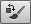
The color replacement tool is grouped with the brush and other paint tools in the Tools panel.
Category: Painting Tools -
History brush
Photoshop’s History feature enables you to store multiple image states as you progress through a Photoshop session and work on an individual image.
Category: Painting Tools -
Art History brush
The art history brush samples from a history state, but the art history brush strokes can be applied using abstract characteristics that smudge the pixels when sampling from the selected history state. The brush characteristics are defined in the art history Options bar. The Tolerance determines how much paint to apply based on how close in color the paint strokes will be from the history to the destination color. And as the Area setting is made larger, the area coverage will increase and the paint strokes be more numerous.
Category: Painting Tools -
Gradient tool 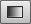
The gradient tool can be used to draw linear, radial, angular, reflected or diamond gradients. To use the gradient tool go to the Options bar and click on the gradient ramp.
Category: Painting Tools -
Paint bucket tool 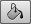
The paint bucket tool amounts to the same as ‘make a magic wand selection based on the sampled color and Tolerance setting in the Options bar and fill the selection with the current foreground color or predefined pattern’.
Category: Painting Tools -
Pen tool 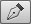
Photoshop provides a suite of vector path drawing tools that work in the same way as the pen path tools found in Adobe Illustrator and other programs that enable you to draw vector paths.
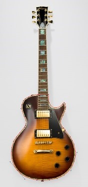 Category: Drawing and Type Tools -
Freeform Pen tool
The freeform pen tool operates more or less exactly like the lasso tool. The main difference is that the freeform pen tool automatically evens out the rough edges as you draw an outline in order to produce a pen path that uses as few anchor points as possible.
Category: Drawing and Type Tools -
Add anchor tool
When the add anchor point tool is selected you can use it to click on a path segment to add a new anchor point to a path.
Category: Drawing and Type Tools -
Delete anchor tool
When the delete anchor point tool is selected you can use it to click on an existing anchor point to delete it.
Category: Drawing and Type Tools -
Convert point tool
When you draw a pen path, the pen tool will lay down what are known as smooth points.
Category: Drawing and Type Tools -
Horizontal type tool and vertical type tool
The type tool allows direct on-image text editing. The only difference between the horizontal and vertical type tools is that the horizontal type tool adds text horizontally and the vertical type tool adds text vertically.
Category: Drawing and Type Tools -
Horizontal type mask tool 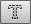 and Vertical type mask tool 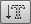
The horizontal type mask and vertical type mask tools offer the same level of typographic control as the standard type tools.
Category: Drawing and Type Tools -
Path Selection tool
Photoshop provides a suite of vector path drawing tools that work in the same way as the pen path tools found in Adobe Illustrator and other programs that enable you to draw vector paths.
Category: Drawing and Type Tools -
Shape tool 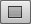
The shape tools allow you to add graphic shapes in the form of a filled layer with a vector mask, a solid fill, or as a path outline. Using the shape tools you can draw rectangular, rounded rectangular, elliptical, polygon, line or custom shapes.
Category: Drawing and Type Tools -
Rectangle shape tool Category: Drawing and Type Tools
-
Rounded rectangle shape tool 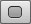 Category: Drawing and Type Tools
-
Ellipse shape tool Category: Drawing and Type Tools
-
Polygon shape tool 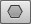 Category: Drawing and Type Tools
-
Line tool Category: Drawing and Type Tools
-
Custom shape tool Category: Drawing and Type Tools
-
Direct selection tool
Photoshop provides a suite of vector path drawing tools that work in the same way as the pen path tools found in other graphics programs, such as Adobe Illustrator.
Category: Drawing and Type Tools -
Hand tool
To navigate around an image, select the hand tool from the tools panel and drag to scroll the contents of the image.
Category: Navigation Tools -
Rotate view tool
If the 'Use Graphics Processor' option is enabled in the Photoshop Performance preferences, you can use the rotate view tool to rotate the Photoshop image canvas
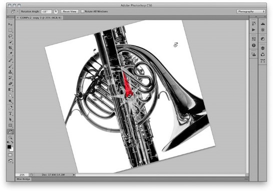 Category: Navigation Tools -
Zoom tool
To zoom in on an image, either click with the zoom tool to magnify, or drag with the zoom tool, marqueeing the area you wish to zoom in to (but see the section below on the default selection of the Scrubby Zoom option).
Category: Navigation Tools -
Foreground/Background colors
The foreground and background color swatches indicate which colors you currently have selected as the foreground and background color. To reset these to the default colors, either click on the black/white foreground/background mini icon or simply click D . This will make black the foreground color and white the background color. Next to the main icon is a switch symbol. Clicking on this exchanges the colors, so that the foreground color now becomes the background color. The keyboard shortcut for this is x. You can also double-click the foreground or background color swatch to open the Color Picker dialog
Category: Navigation Tools